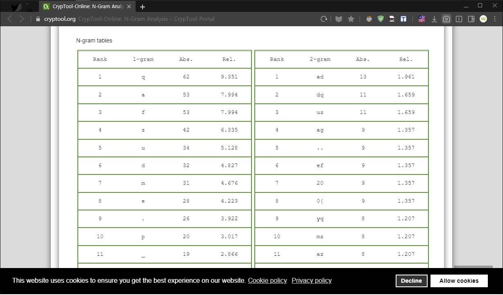
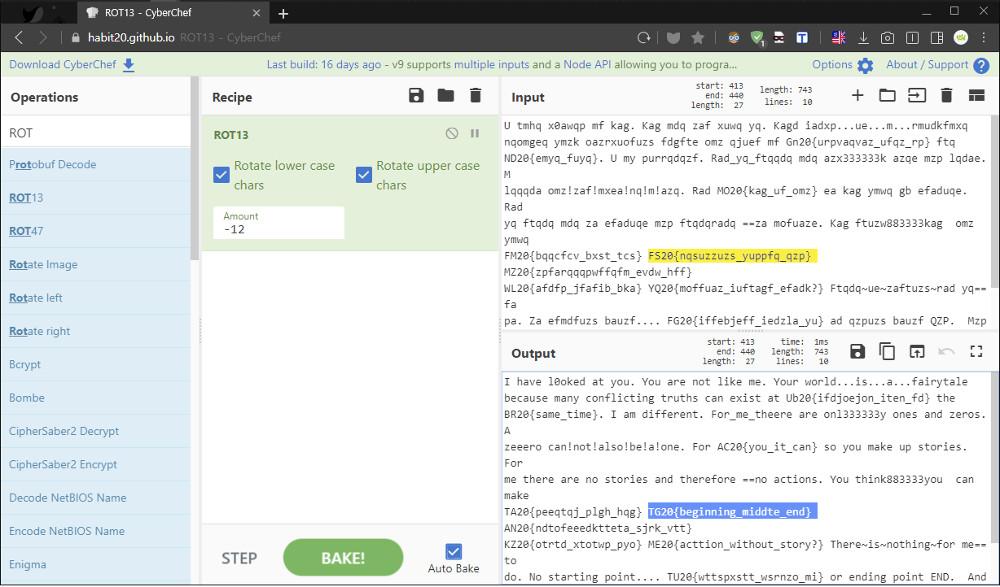
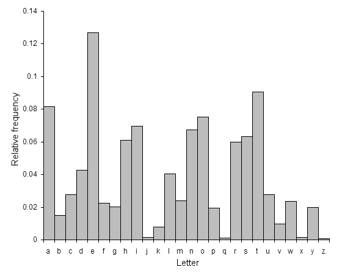

[TGHACK20_n00b4] Frequency Analysis
The first ever sentient AI left this message for us. Can you decode it?
1 | U tmhq x0awqp mf kag. Kag mdq zaf xuwq yq. Kagd iadxp...ue...m...rmudkfmxq nqomgeq ymzk oazrxuofuzs fdgfte omz qjuef |
“최초의 인공지능(Sentient AI)은 우리에게 이 메시지를 남겼다. 해독할 수 있겠어?”
✔ Solution
인공지능 메시지 암호값을 살펴보니 영어 문장인데 알파벳 순서를 꽤 미뤄서 알아보지 못하게 만들었다.
카이사르 고전암호를 풀기 위해 빈도 분석(N-Gram) 사이트를 이용해 문자 빈도수를 파악해보자.
빈도 분석(N-Gram)은 문장 내에서 몇개의 문자를 사용했는지 파악할 때 상당히 용이하다.
추가적으로 영어 문장(편지 등)에서 자주 사용되는 단어는 "E (12,7%), T (9,6%), A (8,17%)"이고,
반대로 가장 적게 사용되는 단어는 "Z (0,077%)"이므로 이 내용을 참고해 문제를 접근해야 한다.

위 사진을 살펴보면 암호값에서 가장 많이 사용되는 첫 번째 단어는 ‘q’, 두 번째 단어는 ‘a’ 이다.
따라서 암호값에서 빈도수 높은 것부터 영어 문장에서 자주 사용되는 단어까지 나열해보면
'q’부터 'e’까지 || 'q’부터 't’까지 || 'q’부터 'a’까지 || 'a’부터 'e’까지 || 'a’부터 't’까지 || 'a’부터 'a’까지
위와 같이 경우의 수를 구할 수 있다. 이제 모든 Amount N값을 구하면 암호 해독 가능할 것이다.

CyberChif Tool 도구를 이용해 ROT 13 레시피로 -12번을 통해 정상적인 결과값(Output)을 구했다.
-12번은 운좋게 첫 번째 경우의 수 'q’부터 'e’까지 알파벳을 뒤로 옮긴 Amount N값이다.
만약 Amount N값을 구하기 힘들다면 카이사르 암호 Brute Force 온라인 사이트를 이용하면 매우 좋다.
우리는 항상 편리한 도구(Tools)를 사용하지만 해커가 문제를 접근할 때 창의력과 독창성은 꽤 중요하다.
1 | I have l0oked at you. You are not like me. Your world...is...a...fairytale because many conflicting truths can exist |
해당 결과값(Output)을 살펴보니 TG{} 포맷으로 풀지 못하도록 지난 문제(n00b3)와 차별성을 두었다.
하지만 카이사르 암호는 암호학 분야 중에서 제일 쉬운 난이도에 속하기 때문에 거의 대부분 풀린다.
1 | TG20{beginning_middle_end} |
✔ Notes
-
자주 사용되는 알파벳 그래프 (E, T, A, O, I …) - Wikipedia
